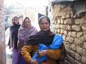

پذيرش > سایت نوشته ها > طرح جديد دولت هند براي جلوگيري از سقط جنين دختران
 نويسنده : گاگانديپ نويسنده : گاگانديپ

 طرح جديد دولت هند براي جلوگيري از سقط جنين دختران طرح جديد دولت هند براي جلوگيري از سقط جنين دختران
6 اردیبهشت 1388 - کانون زنان ایرانی - نسخه قابل چاپ
دولت هند براي متعادل كردن نسبت جنسيتي نوزادان دختر و پسر در اين كشور، در حال بررسي طرحي است كه براساس آن براي خانوادههاي فقيري كه نوزاد دختر دارند، مشوقهاي مالي در نظر گرفته شود.
دولت هند اين طرح را براي مهار كردن سقط جنين دختران كه رشد فزايندهاي در اين كشور پيدا كرده، مطرح كرده است. اين طرح در مارس 2008 ارائه شد اما هنوز در حال بازنگري است. براساس اين طرح، به خانوادة نوزاد دختر پنج هزار دلار پرداخت ميشود و تا 18 سالگي دختر، خانواده تحت پوشش خدمات بيمة درماني قرار ميگيرد، البته مشروط براينكه دختر به مدرسه فرستاده شود و تا اين سن شوهر داده نشود.
اگر اين طرح تصويب شود، دولت بايد دو و نيم ميليون دلار در سال آتي براي آن درنظر بگيرد. اين كمك مالي به خانوادههاي ده منطقه از ايالتهاي پنجاب، هاريانا، بهار، جهارخند و اوريسا داده خواهد شد.
مانجولا كريشنان، مشاور اقتصادي وزارت رفاه هند ميگويد كه هدف از اين طرح خانوادههايي هستند كه درآمد كمشان آنها را زير خط فقر نگه داشته و اين طرح خانوادهها را تشويق ميكند كه نوزاد دختر را به چشم موهبت ببينند نه وبال.
به طور سنتي، دختران در خانوادههاي هندي از ارزش پائينتري نسبت به پسران برخوردارند؛ پسرها نام خانواده را حفظ ميكنند و خانواده مجبور نيست براي آنها جهيزيه بدهد.
اما دكتر سبو جورج از منتقدان اصلي سقط جنين دختران در هند ،معتقد است كه دولت با اجرا كردن قانون مبارزه با سقط جنين دختران (1994) كه مربوط به 15 سال پيش است، بهتر ميتواند اين معضل را كنترل و مهار كند.
او ميگويد:«با اين طرح جديد دولت، پزشكان تصور ميكنند كه قانون سال 1994 كمرنگ شده است و در صورت تخلف، ديگر دستگير و مجازات نخواهند شد.»
دكتر جورج در آگوست 2008 عليه سه شركت آمريكاييالاصل به دادگاه شكايت كرد. اين شركتها، شعبههاي سه شركت گوگل، ياهو و ماكروسافت در هند بودند كه اطلاعاتي در زمينه چگونگي تشخيص جنسيت جنين بر روي سايتهايشان گذاشته بودند و اين كارشان خلاف قانون بود.
نتايج پژوهشها طرح دولت را زير سوال ميبرد
اما پژوهشي كه در سال 2006 در مجله لنست (يك مجله پزشكي انگليسي) منتشر شده، اين طرح دولت را كه براي خانوادههاي كمدرآمد درنظر گرفته شده، زير سوال ميبرد. اين پژوهش نشان ميدهد كه سقط جنين دختران در خانوادههاي تحصيلكرده و آنهايي كه توانايي مالي انجام آزمايشهاي تشخيص جنسيت جنين و پرداخت جهيزيه را دارند، بيشتر است. براساس نظرسنجياي كه از بيش از يك ميليون خانواده در سال 1998 انجام شده، ميتوان برآورد كرد كه سالانه 500هزار نوزاد دختر در هند سقط مي شوند.
همچنين مطابق با سرشماري سال 2001 در هند نسبت جنسيتي بزرگسالان زن به مرد ، 933 زن در ازاي هر 1000 مرد است.در ايالتهاي ثروتمندتر مانند پنجاب، دهلي، راجستان و هاريانا نسبت جنسيتي حتي كمتر از اين رقم است. در اين ايالتها 875 زن به ازاي هر 1000 مرد وجود دارد. نسبت جنسيتي كودكان هم بسيار نامتعادل است؛ 927 دختر (كمتر از 6 سال) به ازاي هر1000 پسر در همين سن.
بر اساس گزارشي كه به تازگي منتشر شد در بخشي از ايالت پنجاب كه ثروتمندترين ايالت هند است، به ازاي هر 1000 پسر، تنها 300 دختر وجود دارد. كارشناسان همچنين معتقدند كه نسبت جنسيتي در پنج ايالت هند پس از سال 2001 نامتعادلتر هم شده است.
از سوي ديگر، با تصويب قانون سقط جنين در سال 1971، اكنون سقط جنين در هند قانوني است. اين قانون به پزشكان اجازه ميدهد كه در 20 هفتة اول بارداري بتوانند جنين را سقط كنند.
ممنوعيت سقط جنين دختران
اما سقط جنين دختران، يعني بهكارگيري تكنيكهايي كه جنسيت جنين را مشخص ميكنند آن هم با هدف سقط كردن نوزاداني كه دختر تشخيص داده ميشوند، از سال 1994 ممنوع شده است و پزشكان اجازه ندارند كه جنسيت جنين را به پدر و مادر نوزاد اعلام كنند.
از سال 1994 تاكنون، تنها 350 پرونده سقط جنين دختران در دادگاه تشكيل شده است.226 مورد مربوط به كلينيكهايي بوده كه بدون اينكه ثبت شده باشند، فعاليت ميكردند، 37 مورد هم به خاطر آشكار كردن جنسيت جنين و 27 مورد هم به دليل تبليغ خدمات سقط جنين دختران.
همچنين جريمه پزشكاني كه جنين سالم دختر را سقط كنند تا سه سال زندان و پرداخت 250 دلار است كه اگر جرم ديگري هم مرتكب شده باشند، جريمه تا پنج سال زندان و دو هزار و 500 دلار افزايش پيدا ميكند و حتي ممكن است پروانه پزشكي آن پزشك هم تعليق و تا مدتي اجازه كار نداشته باشد.
اين قانون، مجازاتي هم براي زنان باردار و اعضاي خانوادهشان كه در سقط جنين نقش دارند، درنظر گرفته كه تا پنج سال زندان و پرداخت 10 هزار روپيه، معادل 250 دلار است.
در مارس 2008، پروانه پزشكي مانگالا تلانگ، پزشك متخصص زنان كه از پزشكان معروف در دهلي نو است، به حال تعليق درآمد. زيرا او اطلاعاتي در مورد جنسيت يك جنين داده بود.
در آگوست 2008 هم ميتو خورانا، از پزشكان دهلي نو، عليه شوهرش كه او هم يك پزشك است و نيز پدر و مادرش به دادگاه شكايت كرد. زيرا آنها به طور غيرقانوني آزمايش تشخيص جنسيت جنين را انجام و او را براي سقط جنين در فشار گذاشته بودند. او اكنون مادر دو دختر دوقلو است و پرونده شكايت همچنان تحت بررسي است.
دامن زدن به تقاضاي سقط جنين از سوي پزشكان
جورج و ديگر فعالان اجتماعي در هند، پزشكان را متهم ميكنند به اينكه به تقاضاي بيماران براي تشخيص جنسيت جنين و سقط جنين دختران دامن مي زنند.
اما پزشكي كه خواست نامش فاش نشود ميگويد: «ما اين كار را ميكنيم چون در اين كشور تقاضا براي سقط جنين دختران وجود دارد. فكر ميكنيد وقتي زوجي نوزادشان را نميخواهند، ما ميتوانيم جلوي سقط جنين را بگيريم؟ اگر من اين كار را نكنم، كس ديگري برايش سقط مي كند.»
جورج كه بيش از دو دهه در زمينة سقط جنين دختران پژوهش كرده، ميگويد: «سقط جنين دختران، يك جرم پزشكي فراگير سازمانيافته است. پزشكان اين كار را به خاطر پول انجام ميدهند و مطمئن هستند كه دستگير نميشوند.»
جورج، دولت را به اهمال كاري و بي توجهي در اين قضيه متهم مي كند زيرا به آساني ميتوان پزشكاني را پيدا كرد كه جنسيت جنين را مشخص كنند و تبليغات براي اين كار به طور آشكار انجام ميشود.
در حال حاضر دولت هند مشوقها و مجازاتهايي را براي متعادلسازي نسبت جنسيتي در نظر گرفته است. وزير بهداشت هند يك سال پيش، از لايحة حكم حبس ابد براي پزشكاني كه اقدام به سقط جنين دختر كنند، دفاع كرده است. همچنين وزارت زنان و كودكان هند، براي دادگاههاي محلي كه در راستاي متعادل كردن نسبت جنسيتي تلاش كنند، مشوقهاي پولي در نظر گرفته است كه هنوز دستورالعملهاي اجرايي آن صادر نشده است.
منبع: www.womensenews.org
ترجمه: مهرزاد غنيپور-کانون زنان ایرانی
ارسال به
بالاترین
،
توییتر
،
فریندفید
،
فیسبوک
در همين بخش :
 یک خبر تلخ؟ یک قانونشکنی؟ یک تصمیم بخشنامهای جدید؟ یک خبر تلخ؟ یک قانونشکنی؟ یک تصمیم بخشنامهای جدید؟
چرا بایست به سکسوالیته پرداخت؟ / نفیسه آزاد
آزارجنسی خانگی؛ «قربانی» نه، «نجات یافته»
زنان، بزرگترین بازندگان بهار عرب
سانسور از دیدگاه جنسیتی/الهه امانی
ديگر بخش ها :
طرح یک میلیون امضا
|
مقالات
|
سایت نوشته ها
|
اخبار
|
گزارش كمپين
|
گفت و گو
|
علیه سکوت
|
كوچه به كوچه
|
نامه های شما
|
گزارش ویژه
|
گفتگو با اعضا
|
ویژه سالگرد کمپین
|
تصویر برابری
|
دل آرام علی
|
تریبون
|
مقالات
|
تاریخ شفاهی
|
خارج از چارچوب
|
کتابخانه
|
درباره کمپین
|
کمپین در شهرها
|
کمپین در بند
|
صدای تغییر
|
ویژه 22 خرداد
|
لایحه حمایت از خانواده
|
گالری
|
عشا مومنی
|
امیر یعقوبعلی
|
خدیجه مقدم
|
راحله عسگری زاده و نسیم خسروی
|
پروین اردلان،جلوه جواهری، مریم حسین خواه، ناهید کشاورز
|
زینب پیغمبرزاده
|
سعیده امین، سارا ایمانیان، محبوبه حسین زاده، ناهید کشاورز و همایون نامی
|
احترام شادفر
|
نسیم سرابندی زاده،فاطمه دهدشتی
|
وبلاگ مهمان
|
پرونده خرم آباد
|
دستگیری ها
|
مریم مالک
|
پرستو اللهیاری
|
مهرنوش اعتمادی
|
سمیه رشیدی
|
Other Languages
|
همراهان
|
«فراخوان کمپین ده روز با بهاره هدایت»
| English
|